1. Aperol Spritz

Ten kolorowy drink składa się z Prosecco, Aperolu i wody gazowanej. Często podawany z pomarańczą jako dekoracją.
2. Bee's Knees
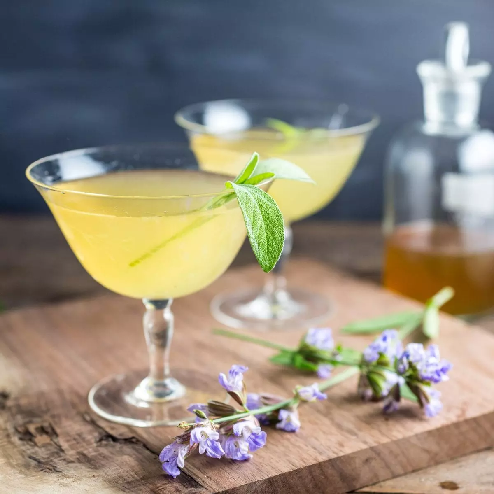Stworzony w czasach prohibicji drink, zrobiony z ginu, cytryny i syropu miodowego.
3. cosmopolitan
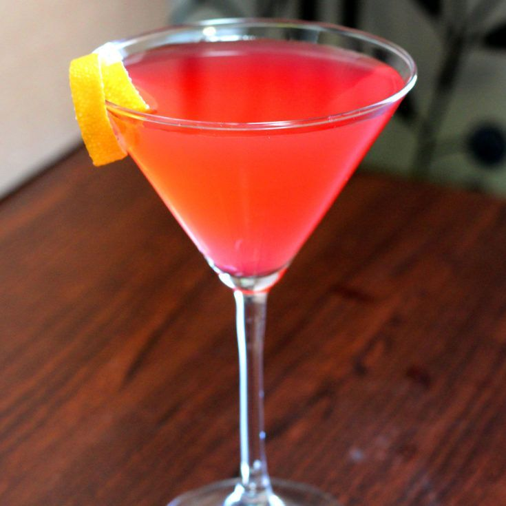Słodko-kwaśny drink składający się z wódki, pomarańczowego likieru triple sec, soku żurawinowego i limonki.
4. Dry Martini
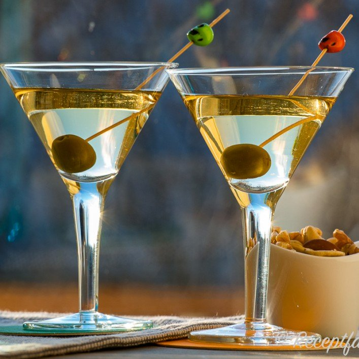Elegancki i klasyczny koktajl to połączenie ginu i wytrawnego wermutu. Często ozdabiany oliwkami czy skórkami z cytryny.
5. Krwawa Mary
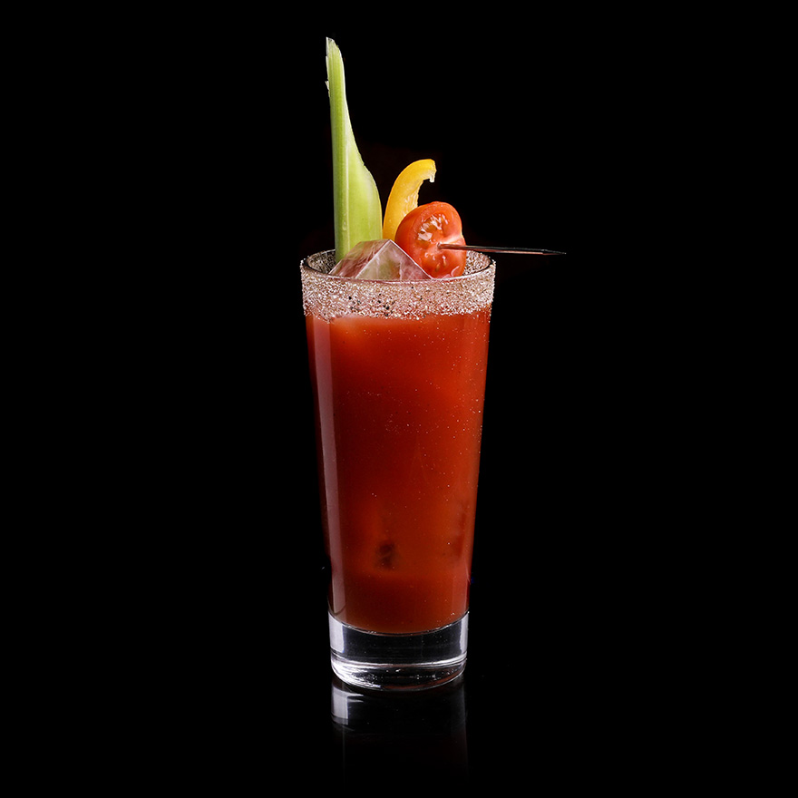Warzywne podejście do drinków. Tworzony jest z soku pomidorowego wódki i różnych przypraw, jak np. tabasco, sól, czy pieprz.
6. Long Island
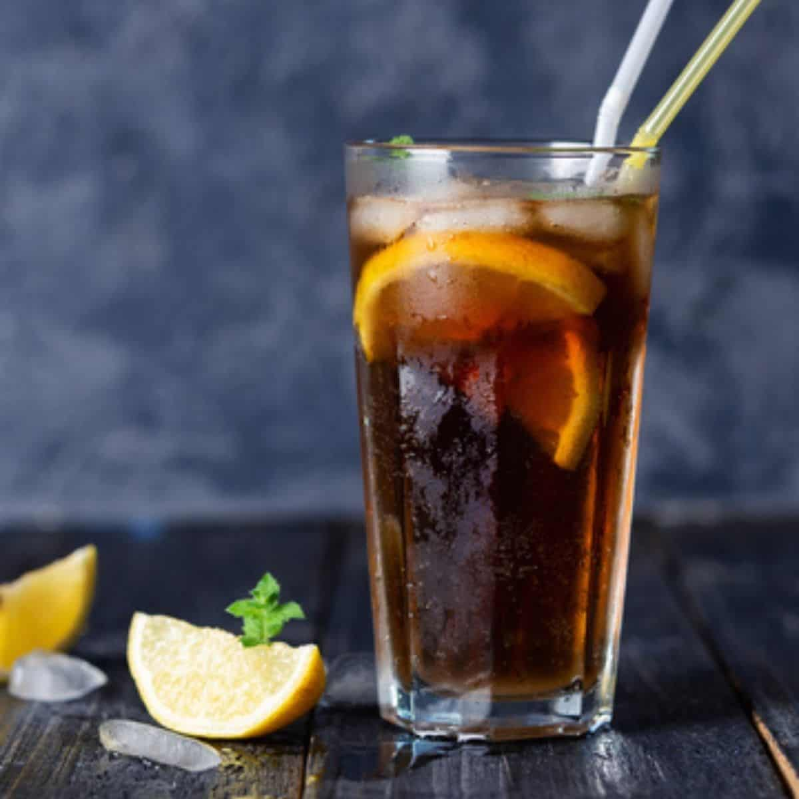Idealny wybór dla niezdecydowanych. Ten udający herbatę napój składa się z rumu, wódki, tequili i ginu.
7. Margarita
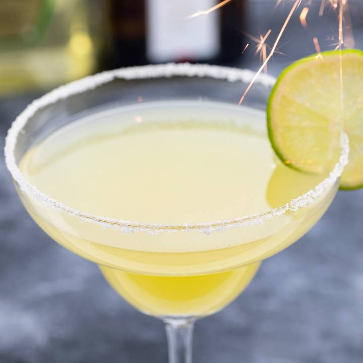Jeden z najpopularniejszych drinków na bazie tequili, przyrządzany jest z likieru Cointreau, soku z limonki i oczywiście tequili, szklankę często pokrywa się solą.
8. Mojito
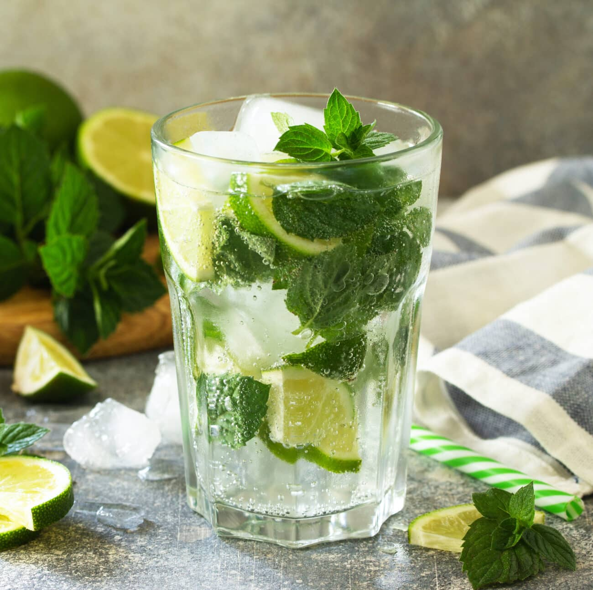Prawdopodobnie najpopularniejszy koktajl wywodzący się z kuby. Jest to połącznie rumu, soku z limonki, wody gazowanej, syropu cukrowego i mięty.
9. Old Fashioned
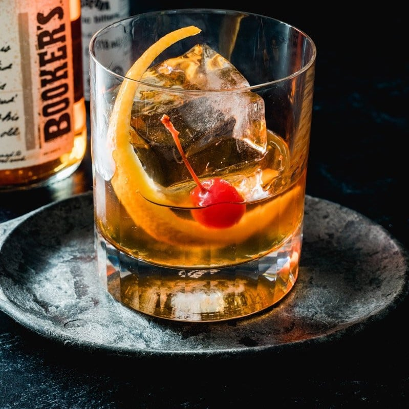Prosty, klasyczny, wytrawny. Old fashioned to drink na bazie whiskey lub burbonu z kostką cukru, angosturą i skórką pomarańczy.
10. Penicylina
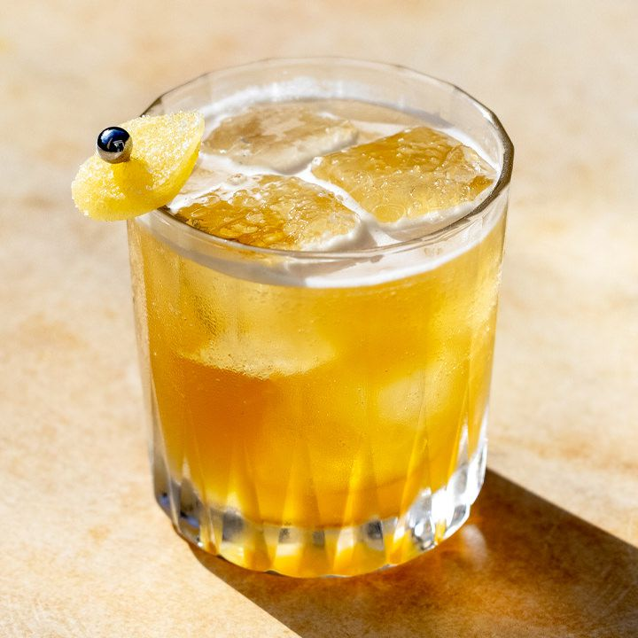Pyszny drink cieszący nie tylko kubki smakowe, ale pomagający też na przeziębienie. Składa się z syropu miodowego, imbiru, soku z cytryny, i whiskey.
11. Pina Colada
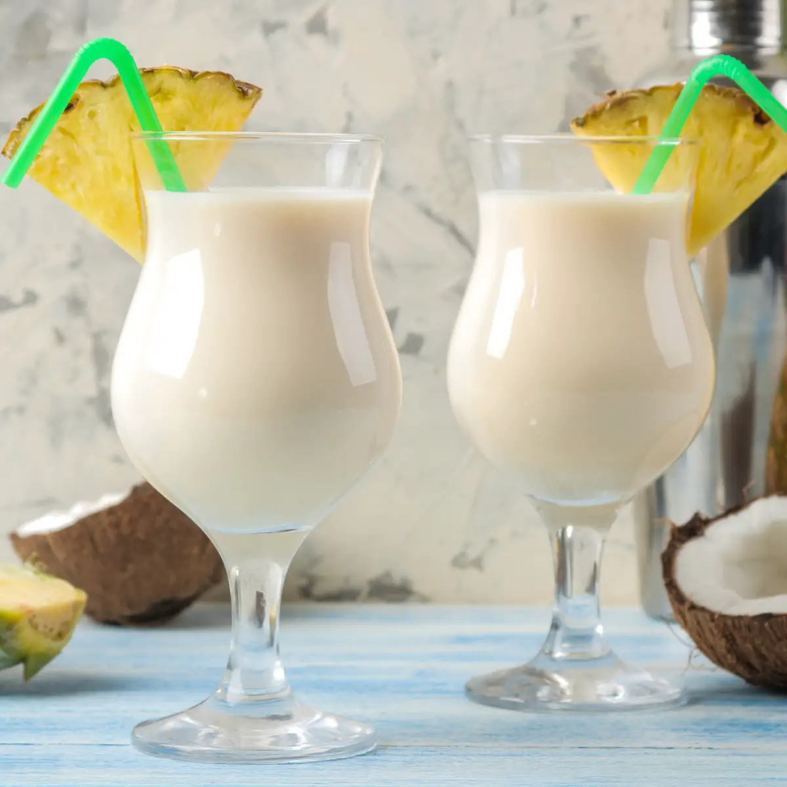Koktajl najlepiej przygotowywany przy użyciu blendera. Oprócz kostek lodu składa się na niego sok ananasowy, rum kokosowy, mleczka kokosowego i soku z limonki.
12. Whiskey Sour
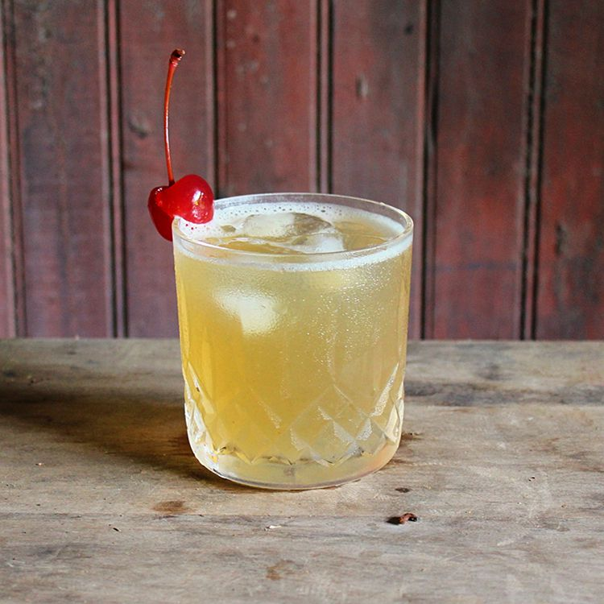Istnieje wiele odmian tego napoju. Najbardziej klasyczna wersja jest robiona z whiskey, soku cytrynowego i syropu cukrowego, często dodaje się też białko jajka.